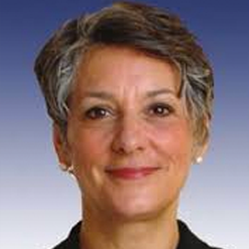

Many cities and states around the U.S. are adopting open data policies and practices to share information with residents and other stakeholders. What are the 3 most important things you would do as governor to make state data “open”?
Tom Corbett
We are still waiting for a response from Tom Corbett.
Paul Glover
A. I would appoint Boards and Commissions whose members are
aggressively dedicated to full disclosure by default. Databases cannot
be allowed to exist passively. Their content must be pushed by people
eager to see the information used for public benefit. Translations of raw
data into popular formats, with easy navigation toward customizable
details, is essential.
B. Would appoint a special commission to coordinate and monitor the
above.
C. Would reward best practices and punish data hoarding.
Bob Guzzardi
Municipalities, counties and school districts are subdivisions of the state. One of the biggest abuses of “right to know” concerns executive sessions. HB 1671 appears to address the most important concerns by narrowing the instances when an executive session can be called and requiring an audio recording of it so if an allegation arises that it was improperly held the matter can be verified by a judge. The bill would also require the solicitor to go on record with his advice as to whether such a session is warranted. I support the bill.
Penn State, Pittsburgh, Temple and Lincoln and any organization or business that receives government/taxpayer money would need to be subject to Right to Know and Open Access policies.
Ken Krawchuk
See answers to #1, #2, #3.
As mentioned, citizens should have the ability to decide which data most need to be open.
Rob McCord
As governor, my open data policy will be designed with the goal of leveraging information to
improve on three fronts: greater transparency in government; greater participation and
understanding among the public for what their government does; and improving
collaboration with people engaging state agencies and elected officials as part of the policymaking
process. To do that, I would undertake three initial steps to move Pennsylvania
toward an open-data government:
1) Conduct a top-to-bottom inventory of what information exists and identify in what format
that data is available.
2) Assess what information outlets currently exist within each state agency now and
consider how these “silos” can be integrated into one convenient access point for all
public inquiries.
3) Change the mindset of state government to be one where information is proactively
made available as opposed to the more common approach today of releasing
Katie McGinty
First, as Governor, I would select a member of my team to serve as a full-time Director
of Open Data, whose primary goal is to research the project; oversee and execute the
audit of data available; implement a plan to effectively and efficiently collect and
centralize the process and the data; provide recommendations and direction to create an
online, one-stop-shop for public access to data and information; and to maintain the
records, data and information available to the public.
Second, I would assemble a specific group of stakeholders (citizens, non-profit and
news organizations, business and local government officials) to provide input and
feedback during each stage of the audit, creation of the site, as well as on-going
maintenance and improvements.
Finally, I would push for additional education regarding open data process / policies. To
ensure the success of the open data policy, the public, government, private business,
communities, etc., must be made aware of the process and what is available. Through
the education of staff, the public and stakeholders, we will have the ability to foster
greater government transparency and public trust in the process.

Allyson Schwartz
As I said, as governor, I will form a group to investigate an open data plan for Pennsylvania, drawing ideas from what has and is being done in Philadelphia and Pittsburgh.
Tom Wolf
First, I will be a vocal advocate for publicly sharing information, and my
administration will be committed to transparency, participation, and collaboration –
this is something I am serious about doing as governor. Second, I will create an
office that is directly responsible for ensuring we follow through on this commitment.
Third, I will support legislative efforts to make sure Pennsylvania remains an open
and transparent state for years to come.